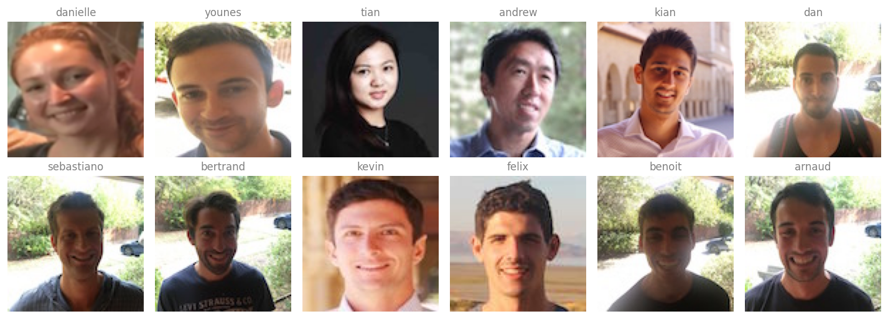
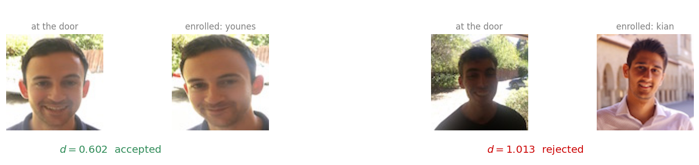
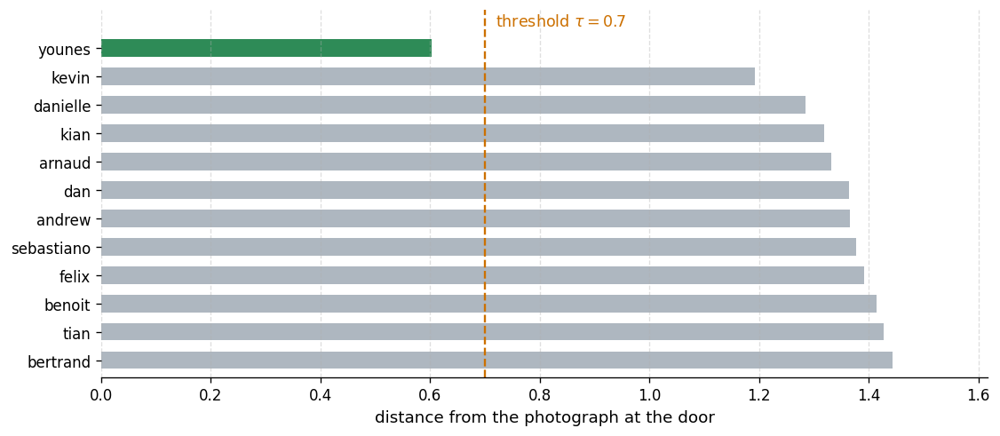

Load a pretrained FaceNet, implement the triplet loss, encode a database of faces, and build verification and recognition on top of the distances.
Published
Aug 20, 2026
ImportantFour changes from the original notebook
The assignment was written against TensorFlow 2.3 with Keras 2, and this page runs on TensorFlow 2.21 with Keras 3. Four things changed (updated 2026-08-31).
Model loading moved to TFSMLayer. The assignment’s model_from_json plus load_weights reads Keras 2 files that Keras 3 cannot deserialize, raising Could not locate class 'Functional'. The SavedModel export of the same weights still loads.
The computed distances shifted by around 0.003, because the SavedModel export and the Keras 2 graph do not agree bit for bit. Every decision at the 0.7 threshold is unchanged.
The random grader test cases were replaced with real face examples, which show the same properties on data a reader can interpret.
who_is_it now rejects at >= the threshold, matching verify, so a distance of exactly 0.7 is treated the same way by both.
The FaceNet weights, the triplet loss, the database of encodings and the verification and recognition tasks are the assignment’s own. An alignment experiment was added at the end.
Three things get built. The triplet loss is written out in TensorFlow, so that the formula on the previous page becomes four lines of code. A database of face encodings is assembled by pushing twelve photographs through a pretrained network. And two functions sit on top of that database, verify, which checks one claimed identity, and who_is_it, which searches the whole database with no claim at all.
The network itself is not trained here. Training a face recognizer needs millions of images, which is exactly the situation the previous page described as the one where downloading someone else’s parameters beats starting from scratch. The weights used below are a pretrained FaceNet.
NoteLab Files Download
The photographs are small and hosted here. The network is too large for that, so it lives on Google Drive.
images/ (212 KB), the twelve enrolled faces plus six camera frames, all \(96 \times 96\) and aligned
Unzip the archive next to the notebook and a facenet/ directory appears, holding saved_model.pb and a variables/ folder. That directory is what TFSMLayer is pointed at. Google warns that it cannot scan a file this size, which is expected, and the download proceeds after confirming.
A command line download needs the confirmation supplied up front, because a plain request returns the warning page rather than the archive.
The model.json and model.h5 that the original notebook loads are Keras 2 artifacts from 2020 and will not open under Keras 3, so the SavedModel is the copy to use. The other files in the assignment folder, including nn4.small2.v7.h5 and the Happy House datasets, belong to different labs and are not needed here.
Packages
The only unusual import is TFSMLayer, which is explained in the next section. Everything else is NumPy for the distance arithmetic, PIL and Matplotlib for showing the photographs, and TensorFlow for the network.
import osos.environ["TF_CPP_MIN_LOG_LEVEL"] ="3"# quiet TensorFlow's startup loggingimport numpy as npimport matplotlib.pyplot as pltfrom PIL import Imageimport tensorflow as tfLAB ="../../../media/deep-learning/face-recognition-lab/"print("TensorFlow", tf.__version__)print("Keras", tf.keras.__version__)
TensorFlow 2.21.0
Keras 3.15.0
Loading the Pretrained Network
The network is a FaceNet, an Inception-ResNet trained on a very large collection of faces with exactly the triplet loss written out below. It takes a \(160 \times 160\) color image and returns a vector of 128 numbers, which is the encoding \(f(x)\) from the previous page.
NoteCompatibility Note
The original assignment loads the network with model_from_json followed by load_weights, reading a model.json and a model.h5 that were written by Keras 2 in 2020. That no longer works. Keras 3, which ships inside TensorFlow 2.16 and later, cannot deserialize those files and raises Could not locate class 'Functional'.
The same weights were also shipped in TensorFlow’s SavedModel format, and that format still loads. Keras 3 exposes it through tf.keras.layers.TFSMLayer, which wraps a SavedModel as an inference-only layer. The weights are the original ones, so the encodings are the original encodings. Checked on 2026-08-20 against TensorFlow 2.21 and Keras 3.15.
One consequence is worth stating plainly. Distances computed here differ from the numbers printed in the original notebook by around 0.003, because the SavedModel export and the Keras 2 graph do not agree bit for bit. The image loading is unchanged, since both the source helper and this page call load_img(..., target_size=(160, 160)) with the same default resampling filter. Every decision at the 0.7 threshold is the same, but do not expect the digits to match.
A TFSMLayer returns a dictionary rather than a bare tensor, keyed by the name of the SavedModel’s output. Pulling the single value out of that dictionary is the only extra step compared to a normal Keras model.
The last layer is fully connected with 128 units, so every face becomes a point in a 128 dimensional space. Two encodings can then be compared with an ordinary Euclidean distance, and that comparison is the entire recognition system.
Triplet Loss
The pretrained weights already encode faces well, so nothing below needs training. Writing the loss out anyway is worth the few minutes, because it is the thing that made those weights what they are.
For a triplet of an anchor \(A\), a positive \(P\) of the same person, and a negative \(N\) of somebody else, the loss is
which turns into four steps. Square the difference between the anchor and positive encodings and sum along the last axis, do the same for the anchor and negative, subtract the second from the first and add the margin, then floor the result at zero and sum over the batch.
tf.reduce_sum(..., axis=-1) is what turns a batch of 128 dimensional differences into a batch of scalars, one squared distance per triplet. Summing over axis=-1 rather than over everything is the detail worth watching, because summing over everything would collapse the batch too and give a single number where a vector is wanted.
def triplet_loss(y_true, y_pred, alpha=0.2):"""Triplet loss on a batch of (anchor, positive, negative) encodings. y_true is unused. Keras requires the argument, and the labels carry no information here, because which image is the positive is already decided by how the triplet was assembled. """ anchor, positive, negative = y_pred[0], y_pred[1], y_pred[2] pos_dist = tf.reduce_sum(tf.square(tf.subtract(anchor, positive)), axis=-1) neg_dist = tf.reduce_sum(tf.square(tf.subtract(anchor, negative)), axis=-1) basic_loss = tf.add(tf.subtract(pos_dist, neg_dist), alpha) loss = tf.reduce_sum(tf.maximum(basic_loss, 0.0))return loss
Rather than check the function on random tensors, it is more informative to check it on a triplet the eye can verify. Two photographs of the same person make the anchor and the positive, a photograph of somebody else makes the negative, and the loss should come out at zero, because a well trained network should already satisfy the margin on an easy triplet like this one.
The encodings come from the helper in the next section, so this cell is deferred until after it is defined.
Encoding a Face
img_to_encoding is the bridge between a file on disk and a point in the 128 dimensional space. It loads the image at \(160 \times 160\), scales the pixels into \([0, 1]\), adds a batch axis because the network expects a batch, runs the network, and divides by the L2 norm so that every encoding ends up on the unit sphere.
That last division is what makes the threshold of 0.7 meaningful. Once every encoding has length one, the distance between any two of them is bounded by 2, and a fixed threshold means the same thing for every pair.
The norm is 1 by construction, which confirms the normalization did what it was supposed to do.
Now the triplet loss can be checked on real faces. younes.jpg and camera_0.jpg are two photographs of the same person, and kian.jpg is somebody else.
A = img_to_encoding(LAB +"images/younes.jpg")P = img_to_encoding(LAB +"images/camera_0.jpg")N = img_to_encoding(LAB +"images/kian.jpg")d_ap =float(np.sum((A - P) **2))d_an =float(np.sum((A - N) **2))print(f"squared distance, anchor to positive: {d_ap:.4f}")print(f"squared distance, anchor to negative: {d_an:.4f}")print(f"gap plus margin : {d_ap - d_an +0.2:+.4f}")print()print("triplet loss:", float(triplet_loss(None, [A, P, N])))
squared distance, anchor to positive: 0.3624
squared distance, anchor to negative: 1.9551
gap plus margin : -1.3927
triplet loss: 0.0
The loss is zero, and the line above it says why. The anchor sits much closer to the positive than to the negative, the quantity inside the max comes out negative, and the max selects the zero instead. This triplet is one of the easy ones described on the previous page, the kind that contributes no gradient and that hard triplet mining exists to avoid wasting time on.
Building the Database
The database is a plain Python dictionary mapping a name to that person’s encoding. Twelve people work in this office, and there is exactly one photograph of each, which is the one shot learning setting.
NAMES = ["danielle", "younes", "tian", "andrew", "kian", "dan","sebastiano", "bertrand", "kevin", "felix", "benoit", "arnaud"]database = {}for name in NAMES: suffix =".png"if name =="danielle"else".jpg" database[name] = img_to_encoding(LAB +"images/"+ name + suffix)print(f"{len(database)} people enrolled, each stored as a "f"{database['younes'].shape[1]} number vector")
12 people enrolled, each stored as a 128 number vector
Storing encodings rather than photographs is the precomputation trick from the previous page. The raw images are never needed again, and a person walking up to the door costs one forward pass rather than twelve.

The twelve enrolled photographs. Every one is a 96 by 96 crop, aligned so that the eyes, nose, and mouth sit in roughly the same place in each. Images from the Coursera Face Recognition assignment.
Face Verification
Verification is the one to one problem. A picture arrives together with a claimed name, and the answer is yes or no. Three steps: encode the new picture, measure its distance to the stored encoding for the claimed name, and compare that distance against the threshold.
The threshold of 0.7 is a hyperparameter, the \(\tau\) from the first page. It was not derived, it was chosen because it separates this network’s same-person distances from its different-person distances.
def verify(image_path, identity, database, threshold=0.7):"""Check whether the picture at image_path really is `identity`.""" encoding = img_to_encoding(image_path) dist =float(np.linalg.norm(encoding - database[identity]))if dist < threshold:print(f"It is {identity}, welcome in.") door_open =Trueelse:print(f"It is not {identity}, please go away.") door_open =Falsereturn dist, door_open
Two cases are worth running. In the first, Younes walks up to the door and claims to be Younes, which is true. In the second, somebody who does not work in the office has picked up Kian’s ID card and claims to be Kian, which is not.
print("Younes at the door, claiming to be younes")d_true, _ = verify(LAB +"images/camera_0.jpg", "younes", database)print(f" distance {d_true:.4f}\n")print("A stranger at the door, holding Kian's card")d_false, _ = verify(LAB +"images/camera_2.jpg", "kian", database)print(f" distance {d_false:.4f}")
Younes at the door, claiming to be younes
It is younes, welcome in.
distance 0.6020
A stranger at the door, holding Kian's card
It is not kian, please go away.
distance 1.0130
Both answers are correct, and the gap between the two distances is what makes them correct. The genuine claim lands well under the threshold, the false one well over it. Neither is anywhere near 0.7, which is the sign of a threshold that has room to breathe.

The same threshold decides both cases, and neither one is close to it. Images from the Coursera Face Recognition assignment.
Face Recognition
Recognition drops the claim. A picture arrives with no name attached, and the system has to work out which of the twelve people it is, or report that it is none of them. The card and the keypad disappear, and the face alone opens the door.
The implementation is a sweep. Encode the new picture once, walk the database comparing against every stored encoding, keep the smallest distance, and apply the same threshold at the end so that a stranger is rejected rather than matched to whoever happens to be nearest.
def who_is_it(image_path, database, threshold=0.7):"""Find who the picture at image_path is, or report that it is nobody.""" encoding = img_to_encoding(image_path) min_dist, identity =float("inf"), Nonefor name, stored in database.items(): dist =float(np.linalg.norm(encoding - stored))if dist < min_dist: min_dist, identity = dist, name# Use >= so this matches verify()'s `dist < threshold` exactly. With a# plain > , a distance of exactly 0.7 would be rejected by verification# but accepted here.if min_dist >= threshold:print(f"Not in the database. Closest was {identity} at {min_dist:.4f}.") identity =Noneelse:print(f"It is {identity}, distance {min_dist:.4f}.")return min_dist, identity
The same photograph that verification handled is a fair first test, except that now nothing tells the system who to expect.
distance, name = who_is_it(LAB +"images/camera_0.jpg", database)
It is younes, distance 0.6020.
The sweep is worth seeing in full, because the answer is not just that one distance is small. It is that one distance is small and the other eleven are not.

Every comparison the sweep makes for one photograph. Only the correct person falls under the threshold.
That is the whole system. A pretrained encoder, a dictionary of vectors, and a threshold.
Why the Pictures Have To Be Aligned
Every photograph used above is a \(96 \times 96\) crop that has been run through a face detector and aligned, so that the eyes, the nose, and the mouth land in roughly the same position in every image. That preprocessing is easy to overlook, and it is not optional.
The faces used in the figures on the two note pages are ordinary crops from a photograph collection, not aligned to any template. Running the same network on them shows what the difference costs.
NOTES ="../../../media/deep-learning/face-recognition/"pairs = [("same person", "person-b", "person-b-again"), ("same person", "triplet-anchor", "triplet-positive"), ("different people", "person-b", "person-a"), ("different people", "person-c", "person-e")]print(f"{'truth':18}{'pair':36}{'distance':>9} verdict at 0.7")for kind, left, right in pairs: d =float(np.linalg.norm(img_to_encoding(NOTES + left +".jpg")- img_to_encoding(NOTES + right +".jpg"))) verdict ="same"if d <0.7else"different"print(f"{kind:18}{left +' vs '+ right:36}{d:>9.3f}{verdict}")
truth pair distance verdict at 0.7
same person person-b vs person-b-again 0.884 different
same person triplet-anchor vs triplet-positive 0.954 different
different people person-b vs person-a 1.321 different
different people person-c vs person-e 1.031 different
Both of the same-person pairs are called different. The network is not broken and the photographs are not bad, they are simply not the kind of input this network was built to consume. Loose crops vary in how much hair and background they include and in where the face sits inside the frame, and a FaceNet embedding is sensitive to exactly that.
A real deployment therefore has a step in front of the encoder, running a face detector such as MTCNN and warping the detected face onto a canonical template before any encoding happens. The lesson generalizes past face recognition. A pretrained network inherits the preprocessing of the data it was trained on, and feeding it something that merely looks similar to a human eye is not enough.
References
Schroff, F., Kalenichenko, D., & Philbin, J. (2015). FaceNet: A unified embedding for face recognition and clustering. In 2015 IEEE Conference on Computer Vision and Pattern Recognition (CVPR) (pp. 815-823). IEEE. https://doi.org/10.1109/CVPR.2015.7298682
Taigman, Y., Yang, M., Ranzato, M., & Wolf, L. (2014). DeepFace: Closing the gap to human-level performance in face verification. In 2014 IEEE Conference on Computer Vision and Pattern Recognition (pp. 1701-1708). IEEE. https://doi.org/10.1109/CVPR.2014.220